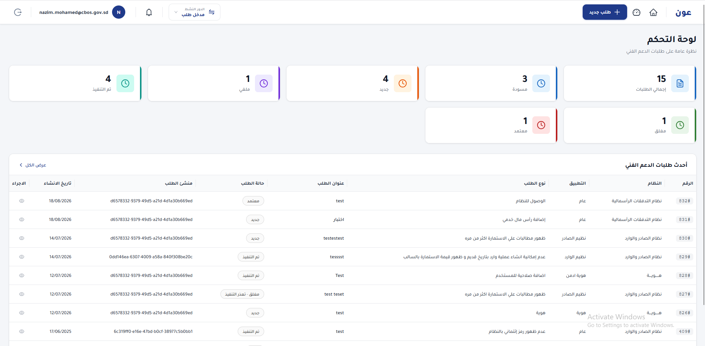
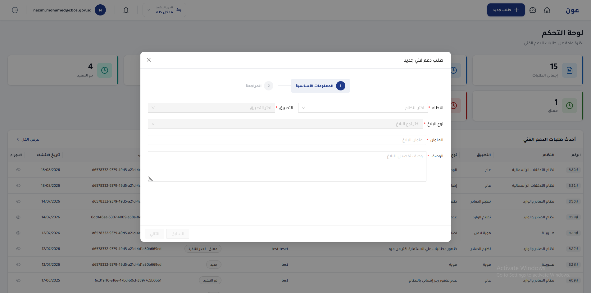
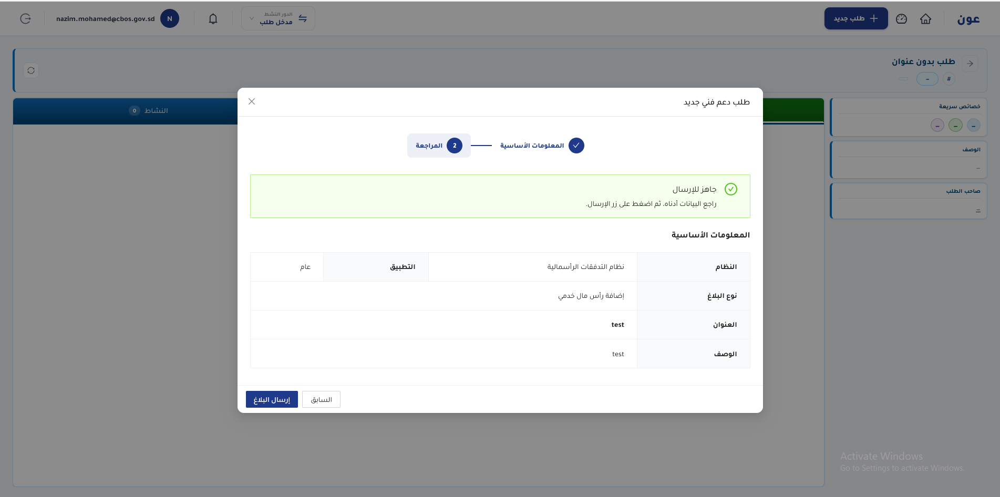
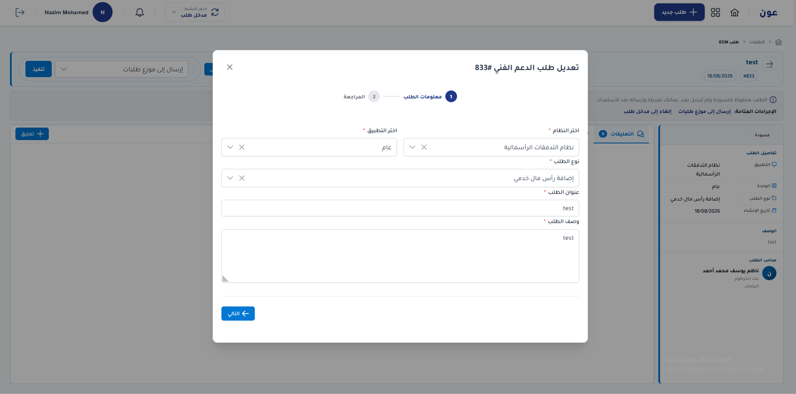
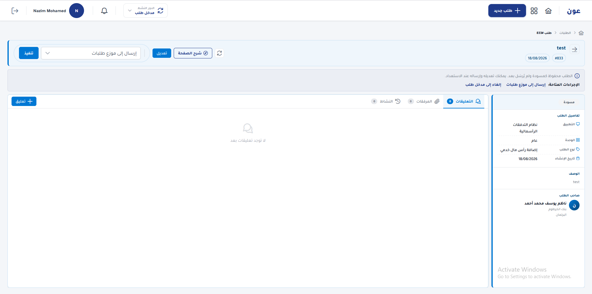
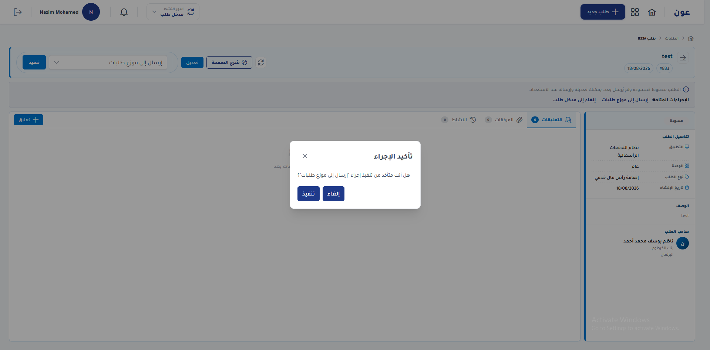
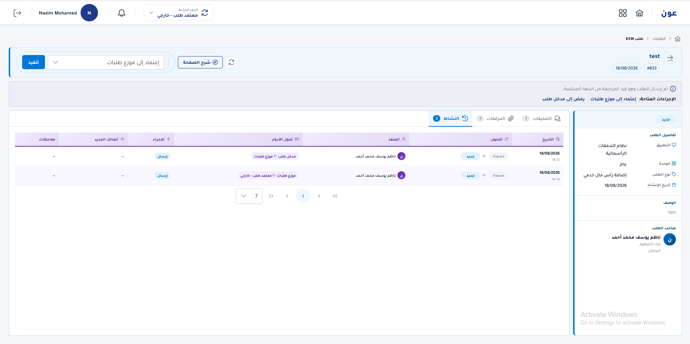
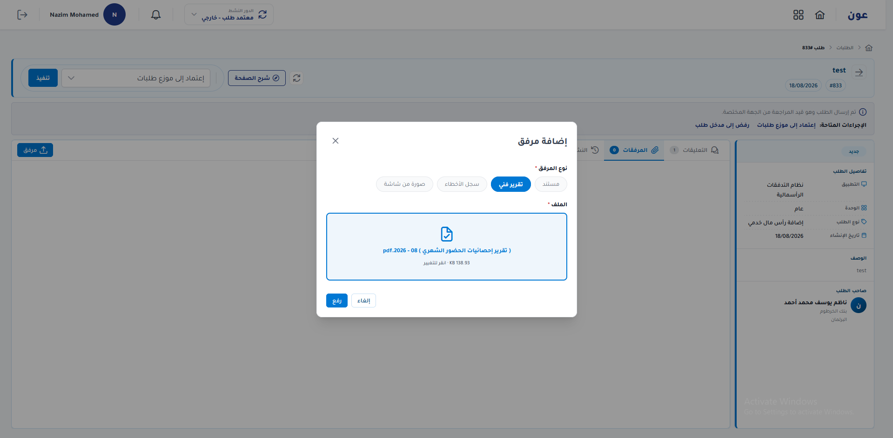
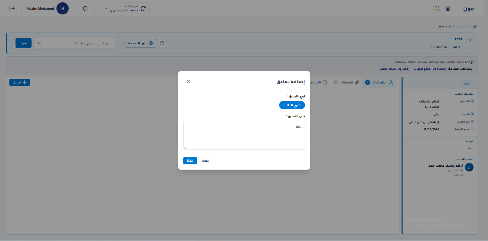

1. مقدمة ومسار العمل
نظام عون لإدارة طلبات الدعم الفني. المسار الأساسي بسيط: مدخل البيانات ينشئ الطلب ويعدّله ثم يرسله، المعتمد يراجعه ويعتمده أو يرفضه، وبعد الاعتماد يُرسل الطلب إلى المنفذين لحل المشكلة. أثناء ذلك يمكن لمدخل البيانات والمعتمد إضافة تعليقات ومرفقات، ويتابع المستخدم حركة طلبه من تبويب النشاط.
| المرحلة | من يقوم بها | ماذا يحدث |
|---|---|---|
| 1. الإنشاء والتعديل | مدخل البيانات (مدخل طلب) | إنشاء الطلب، تعديله وهو مسودة، ثم إرساله للاعتماد. |
| 2. الاعتماد | المعتمد (معتمد طلب) | مراجعة الطلب ثم اعتماده أو رفضه وإرجاعه لمدخل البيانات. |
| 3. التنفيذ | المنفذون | بعد الاعتماد يصل الطلب للمنفذين لمعالجة المشكلة وإغلاقها. |
| التواصل والمتابعة | مدخل البيانات والمعتمد | إضافة تعليقات ومرفقات، ومتابعة الحركات من تبويب النشاط. |
2. لوحة التحكم
بعد الدخول تظهر لوحة التحكم. من هنا يبدأ مدخل البيانات يومه: يرى إحصاءات الطلبات حسب الحالة، وآخر الطلبات، وينشئ طلباً جديداً من الزر الأزرق «طلب جديد».
- زر «+ طلب جديد» في الشريط العلوي لفتح نموذج الإنشاء.
- بطاقات الإحصاء (إجمالي، مسودة، جديد، ملغي، تم التنفيذ، معتمد، معلّق…). اضغط البطاقة لعرض الطلبات في تلك الحالة.
- جدول «أحدث طلبات الدعم الفني»: الرقم، النظام، التطبيق، نوع الطلب، العنوان، الحالة، المنشئ، وتاريخ الإنشاء.
- أيقونة العين في عمود «الإجراء» تفتح صفحة تفاصيل الطلب لمتابعته.
- جرس الإشعارات واسم المستخدم يظهران في يسار الشريط العلوي.

3. إنشاء الطلب (مدخل البيانات)
مدخل البيانات هو من ينشئ الطلب. اضغط «+ طلب جديد» في أعلى الشاشة. تفتح نافذة من خطوتين: المعلومات الأساسية ثم المراجعة.
الخطوة 1 — المعلومات الأساسية
- اختر النظام (مثل نظام التدفقات الرأسمالية).
- اختر التطبيق (مثل: عام).
- اختر نوع البلاغ.
- اكتب عنواناً واضحاً يصف المشكلة.
- اكتب وصفاً تفصيلياً يساعد المعتمد والمنفّذ على فهم المطلوب.
- اضغط «التالي». زر «السابق» يكون معطّلاً في هذه الخطوة.

الخطوة 2 — المراجعة والإرسال
تظهر رسالة «جاهز للإرسال». راجع النظام والتطبيق ونوع البلاغ والعنوان والوصف. إن احتجت تصحيحاً اضغط «السابق». إذا كانت البيانات صحيحة اضغط «إرسال البلاغ». يُحفظ الطلب ويمكن لاحقاً إكماله من صفحة التفاصيل إن بقي مسودة.

4. تعديل الطلب
ما دام الطلب مسودة (لم يُرسل بعد)، يستطيع مدخل البيانات تعديله. من صفحة التفاصيل اضغط «تعديل». تفتح نافذة «تعديل طلب الدعم الفني» بنفس الحقول: النظام، التطبيق، نوع الطلب، العنوان، والوصف.
- افتح الطلب من لوحة التحكم (أيقونة العين).
- اضغط زر «تعديل».
- صحّح الحقول المطلوبة.
- اضغط «التالي» للمراجعة ثم احفظ.

5. إرسال الطلب للاعتماد
بعد الإنشاء يظهر الطلب في صفحة التفاصيل بحالة «مسودة»، مع شريط يوضح أن الطلب محفوظ ولم يُرسل بعد. من هنا يرسله مدخل البيانات ليصل إلى المعتمد.

كيف ترسل الطلب
- في شريط الإجراءات اختر الإجراء «إرسال إلى موزع طلبات».
- اضغط زر «تنفيذ».
- ستظهر نافذة «تأكيد الإجراء».
- اضغط «تنفيذ» للتأكيد أو «إلغاء» للرجوع.

بعد التأكيد تتغيّر الحالة من مسودة إلى جديد، ويصبح الطلب قيد مراجعة الجهة المختصة (المعتمد). يمكن لمدخل البيانات متابعة ذلك من تبويب النشاط.
6. اعتماد الطلب (المعتمد)
المعتمد يفتح الطلب بعد إرساله. يظهر الدور في الشريط العلوي مثل «معتمد طلب». الحالة تكون «جديد»، والشريط يوضح أن الطلب أُرسل وهو قيد المراجعة.
- اقرأ تفاصيل الطلب في اللوحة اليمنى: التطبيق، الوحدة، نوع الطلب، الوصف، وصاحب الطلب.
- راجع التعليقات والمرفقات إن وُجدت.
- افتح تبويب النشاط لمعرفة من أرسل الطلب ومتى.
- من قائمة الإجراءات اختر «اعتماد إلى موزع طلبات» ثم اضغط «تنفيذ» لاعتماد الطلب.
- أو اختر رفض/إرجاع إلى مدخل الطلب إذا كانت البيانات ناقصة أو غير صحيحة.

7. التنفيذ بعد الاعتماد (المنفذون)
بعد أن يعتمد المعتمد الطلب، ينتقل إلى المنفذين. المنفّذ يعالج المشكلة على النظام المعني ثم يغلق الطلب أو يحدّث حالته إلى «تم التنفيذ».
- مدخل البيانات لا ينفّذ الحل بنفسه بعد الإرسال؛ دوره الإنشاء والتعديل والإرسال والمتابعة.
- المعتمد يقرر الاعتماد أو الإرجاع قبل وصول الطلب للمنفذين.
- المنفذون هم من يحلّون المشكلة بعد الاعتماد.
- يمكن متابعة النتيجة من بطاقات لوحة التحكم (معتمد، تم التنفيذ، معلّق…) ومن تبويب النشاط.
9. المرفقات
يمكن لمدخل البيانات والمعتمد إرفاق ملفات توضّح المشكلة أو تدعم القرار (مستند، تقرير فني، سجل أخطاء، أو صورة من الشاشة).
- من صفحة التفاصيل افتح تبويب «المرفقات».
- اضغط زر «مرفق».
- اختر نوع المرفق.
- اختر الملف من جهازك.
- اضغط «رفع».

10. النشاط والحركات — متابعة الطلب
تبويب «النشاط» يسجّل كل حركة على الطلب حتى يتمكن المستخدم من متابعة طلبه دون سؤال الفريق في كل مرة. يظهر فيه التاريخ، التحويل من حالة إلى حالة، من نفّذ الإجراء، تحول الأدوار (مثلاً من مدخل طلب إلى موزع طلبات)، واسم الإجراء.
- مثال: تحويل من مسودة إلى جديد عند الإرسال.
- يظهر اسم المنفّذ للإجراء (من ضغط تنفيذ).
- عمود تحول الأدوار يوضح انتقال المسؤولية بين مدخل البيانات والمعتمد ثم المنفذين.
- بعد كل اعتماد أو رفض تُضاف حركة جديدة هنا.
11. أسئلة شائعة
لا أرى زر طلب جديد
الزر يظهر لدور مدخل طلب. تأكد أن «الدور النشط» في الشريط العلوي هو مدخل طلب.
أنشأت الطلب لكن لم يصل للمعتمد
الطلب يبقى مسودة حتى تضغط «تنفيذ» على إجراء الإرسال وتؤكده. راجع الحالة في صفحة التفاصيل.
لا أستطيع التعديل
التعديل لمدخل البيانات وهو مسودة أو بعد رفض المعتمد. بعد الاعتماد ينتقل العمل للمنفذين.
ماذا يفعل المعتمد؟
يراجع الطلب ثم يعتمد إلى المسار التالي أو يرفضه إلى مدخل الطلب مع إمكانية كتابة تعليق أو إرفاق ملف يوضح السبب.
متى يصل الطلب للمنفذين؟
بعد اعتماد المعتمد. المنفذون هم من يحلّون المشكلة.
كيف أضيف مرفقاً أو تعليقاً؟
من صفحة التفاصيل: تبويب التعليقات أو المرفقات. متاح لمدخل البيانات والمعتمد.
كيف أتابع حركة الطلب؟
افتح الطلب ثم تبويب النشاط. ستجد كل تحويل حالة والإجراء ومن قام به.
8. التعليقات
مدخل البيانات والمعتمد يستطيعان إضافة تعليقات على الطلب للتوضيح أو طلب معلومة. من صفحة التفاصيل اختر تبويب «التعليقات» ثم اضغط «+ تعليق».
